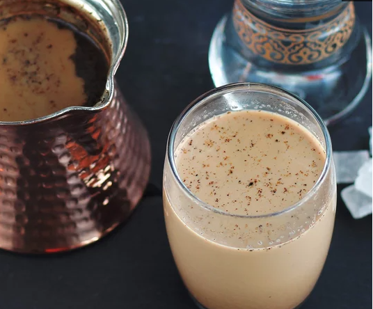

Turkish Coffee

Description
My mom was mad because none of the Turkish coffee recipes she could find online were close to the way she used to
make it. This is her way of making Turkish coffee.
Cook:
5 mins
Total:
5 mins
Servings:
5
Yield:
5 servings
Nutrition Info
Ingredients
- 1 ¼ cups cold milk
- 2 ½ tablespoons finely ground Turkish-style coffee
- 5 teaspoons white sugar, or to taste
Directions
- Stir milk, coffee, and sugar together in a saucepan over medium heat until the sugar dissolves. Cook until
the liquid begins to bubble. Cook another 30 seconds; remove from heat. Serve hot.